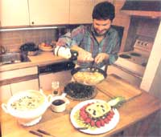

Issue # 111 - May/June 1988
For the first time in two hours, Steven Raichlen stands stock still. All over the sprawling kitchen of this country inn, small knots of amateur cooks seem to have things under momentary control. The crusts for the savory tarts are blind-baking; the artichokes are stuffed and ready for reheating; the brioche dough is rising. Raichlen sighs. A cooking teacher and food writer, he has been dashing from one group to another all morning, assisting here, averting disaster there, occasionally shouting over the hubbub when one team reaches a critical stage in a recipe: "Can you all stop what you're doing and gather round? I want to show you how to shuck an oyster without losing a thumb."
Now, seeing that his students are all at a stopping place, Raichlen strides over to a huge worktable, reaches into a wooden bowl of vegetables and pulls out an onion. "Everybody know how to chop one of these?" Ten pairs of eyes regard him tolerantly. Everyone in the room has been cooking for years, some for decades. "Here, let me show you," he says, and in less time than it takes to wash a food processor bowl, he reduces the onion to a pile of small, neat cubes. "Do that again," demands a computer programmer from New Jersey, and Raichlen does. Then he rummages in the bowl again. "Know how to chop a carrot?" Another pile. "A leek?" Still another. "A quick way to peel and seed a tomato?" An elementary teacher from New Hampshire shakes his head. "I've been cooking for 20 years," he says, "and I'll be using these techniques for the rest of my life."
A Taste of the Mountains cooking school is pan vacation, part feast and part education. At various times each spring, summer and fall, 20 people who are passionate about food and cooking join Raichlen for a weekend or a week at the Bernerhof Inn, a rambling, 100-year-old country inn nestled in the Mt. Washington Valley, amidst the White Mountains of New Hampshire. When the school is in session, the Bernerhof closes its doors and reserves its comfortable premises-10 sunny bedrooms, two dining rooms, an oak-paneled lounge with fireplace, a baby grand piano and a gray-striped kitten that chases wine corks-for an assortment of office workers, housewives, sales people, teachers, pilots and others. Some fantasize about getting out of those jobs and into a career in food; for them, the school is a first step, a careful toe in the water. But most are here not to change professions but to eat vast quantities of first-rate food, to add to their repertoire of cooking skills and to enjoy the handsome New Hampshire countryside.
For weekend sessions, guests arrive Friday evening in time for dinner, prepared and served by Raichlen and the Bernerhof staff. ("Enjoy it," Raichlen grins. "It's the last time you get to eat without working for it.") Classes get underway on Saturday, with half the students preparing a five-course lunch, the other half responsible for a five-course dinner. On their half day out of the kitchen, guests explore the surrounding countryside: hundreds of miles of hiking trails (one leads from the inn to the top of Mt. Washington); clear streams for fishing, canoeing and tubing; ski slopes; scenic roads through the mountains; and outlet and craft stores in North Conway, 10 miles away (including a fine shop featuring the works of the League of New Hampshire Craftsmen). Less energetic vacationers laze around the inn-reading, talking, or singing around the piano.
Sunday morning Raichlen stages a solo demonstration, although, in this very hands-on school, students end up rolling dough and spreading icing while they "observe." After Sunday's five-course lunch, the weekend concludes with class pictures and graduation certificates. Five-day courses follow a similar schedule but last longer.
From arrival to departure, guests enjoy gourmet fare. Friday evening's three-course fondue feast sets the tone: a bubbling pot of Swiss cheese and wine, with bread cubes and fresh vegetables for dipping; a sizzling beef fondue, with superb sauces (curry-chutney, apricot-mayonnaise, soy-fennel and others); and, finally, a warm pot of chocolate, with fresh fruit dippers. The Bernerhof is known for its fondue, and it's a perfect get-acquainted meal. (There's nothing like tangling skewers with a stranger to open a conversation.) A different wine accompanies each course, and by the end of the evening, everyone is vowing to restore fondue to the popularity it enjoyed a couple of decades ago, when newlyweds could count at least three fondue pots among their wedding presents.
The food the guests turn out under Raich-len's supervision is equally impressive and equally abundant. During one recent weekend, students prepared (and consumed) the following dishes, among others: Smoked Bluefish Pâté; Maine Brie in Brioche; Curried Lamb in Lettuce Leaves; Homemade Breadsticks; Hot Anchovy Dip; Empanadas (spicy Latin American turnovers); three kinds of savory tarts (Fennel and Shrimp, Roquefort and Leek, Anchovy and Tomato); Brazilian Bouillabaisse; Tuna Tartare; Stuffed Mushrooms; Artichokes Stuffed With Shrimp; purées of sunchokes and broccoli; Grand Marnier Soufflé; Almond Cakes With Raspberry Sauce; and Cream Puffs With Ice Cream and Hot Fudge.
"Surely we're not going to eat again!" groaned a lawyer from Massachusetts well into the weekend, gamely reaching for her fork. "It's wonderful, but what's Steven doing? Making up for lost time?"
When he was 10 years old, Steven Raichlen sat at the family dinner table, picking at his eighth TV dinner in as many nights and chewing on the prospect of at least eight more to come. Enough was enough. The next time his parents left the house, he headed for the kitchen, where he took matters into his own hands. "My mother, God love her, was a lousy cook," he recalls. "That's how I got into food. Self-defense."
Raichlen is into food the way other people are into breathing. After working his way through Reed College in Portland, Oregon, with a variety of food-related jobs, he emerged with a degree in French literature and a fellowship to study medieval cooking in Europe. For a year he "ate, drank and thought" his way across the Continent, ending up in Paris, where he spent another six months attending two cooking schools: La Varenne in the morning and the Cordon Bleu in the afternoon. "Then I'd go home at night and practice what I'd learned."
In 1977 Raichlen settled in Boston, a self-styled "French clone." After a few months of trying to cook like a Frenchman, he recognized the futility of grousing at his fishmonger for not stocking European varieties: "I discovered that my native New England had marvelous seafood, produce and other native provender, not to mention a rich and long culinary tradition." The thing to do was combine the best of both worlds: "I began to adapt my French recipes to American ingredients, and traditional American recipes to classical techniques. In the process, I became part of what has come to be called the 'new American cooking.' "
Raichlen now makes his living as a cooking teacher and food writer, serving as Boston Magazine's restaurant reviewer and food-and-wine editor. He's written five books, and articles for such magazines as Food and Wine, Esquire and Cook's Magazine. In 1980, while teaching at La Varenne's American extension, he met Ted Wroblewski, owner of the Bernerh of, who persuaded him to commute to New Hampshire periodically to hold cooking classes. Since then, almost 800 students have graduated from their school.
By turns impassioned and irreverent, Raichlen is out to liberate his students from their inhibitions and their cookbooks. "Cooking is not brain surgery," he insists. "Recipes are intended as guides, not gospel. If you don't like curry powder, substitute saffron. If you don't like fish, try the dish with chicken." To help produce creative, freewheeling cooks who intuitively know what foods go well together, Raichlen uses what he calls "the theme and variations" approach: Once people master basic techniques and preparations, he argues, they can create a myriad of individual dishes. For example, after demonstrating how to stuff a chicken breast with smoked cheese and bacon and simmer it in Marsala wine, he encourages students to create their own combinations: figs and gorgonzola (in Madeira), Roquefort and walnuts (port), shrimp and ricotta (vermouth). Like the ingenuity of creative cooks, the combinations are limitless. Thus, A Taste of the Mountains Cooking School Cookbook (Poseidon Press, 1986) is not a collection of recipes but a series of 53 lessons, from "Stocks" to "Fruit Tarts."
The other hallmark of his teaching style is a fondness for explaining. "Look, there's no point in just telling people, 'Never add salt directly to yeast,' " he reflects after a full day of teaching. "That's one piece of information among hundreds; why should anyone remember it? But if you then add, 'Yeast is alive and salt tends to kill things-that's why people use it as a preservative,' then they'll remember. To become creative cooks, people need to know how food works, to understand what is going on."
Raichlen started cooking at age 10. "My mother, God love her, was a lousy cook," he recalls. "That’s how I got into food. Self-defense."
What goes on at A Taste of the Mountains is a combination house party and cooking school. Raichlen does not teach traditional New England cooking (he doesn't claim to). Rather, he is an eclectic cook who combines classical techniques with local foods-fiddlehead ferns, seafood, New England cheeses-and, to some extent, with regional traditions. The resulting chowder has something to offer both interested novices and seasoned cooks. Perhaps his most valuable legacy is that students graduate with enormously increased confidence, ready to attempt dishes they might have considered too difficult before their hands-on experience in New Hampshire. Raichlen has a talent for demystifying fine cooking. As he is fond of pointing out, even the most complicated recipe is just a series of individual steps. And those steps can be mastered- starting with how to chop an onion.
Seafood Chowder 2 pounds mixed white fish fillets, such as cod, haddock, halibut or monkfish
2 pounds mussels
¼ cup dry white wine
3 tablespoons butter
4 leeks, washed, green leaves discarded, and chopped (about 1 cup) 1 onion, finely chopped
1 clove garlic, finely chopped
5 cups fish stock, clam broth or water Reserved mussel broth
2 potatoes, peeled and cut in half length wise, then into ¼-inch slices Bouquet garni (bay leaf, thyme, parsley, black peppercorns, cloves and allspice berries, tied in cheesecloth or wrapped in square of aluminum foil, with holes poked in it) 1½ cups heavy cream
Fresh black pepper and a little salt 1 bunch fresh sorrel or spinach (4 ounces), washed and cut widthwise into ¼-inch strips
Skin and bone the fish, and cut it into 1-inch chunks. Steam mussels in white wine until shells just open. Beard mussels, place a few back in the shells for garnish, and strain and reserve the broth.
Melt butter in large saucepan over medium heat. Add leeks, onion and garlic, and sauté 4-5 minutes or until vegetables are soft. Add clam broth, reserved mussel broth, potatoes and bouquet garni, and bring to a boil. Reduce heat and simmer until potatoes are half-cooked, about 5 minutes. Add fish and cream, and boil rapidly for 5 minutes or until the fish flakes easily. Add mussels, seasonings and sorrel or spinach, and simmer for 30 seconds. Remove bouquet and stir the soup well before serving. Serves 6.
Stuffed Chicken Breasts 3 tablespoons raisins 4 chicken breast halves, skinned and boned 4 slices smoked or Smithfield ham 4 slices Cheddar cheese 1 apple, peeled, cored and thinly sliced Salt and fresh black pepper ½ cup flour 1 tablespoon cooking oil 6 tablespoons hard cider 6 tablespoons cream
Cover raisins with hot water, and set aside to plump. Trim any fat or sinew off breasts, and cut a pocket in each, as described in the sidebar. Stuff each breast with 1 slice ham, 1 slice Cheddar and several apple slices, and pin pocket closed with a toothpick. Season breasts with salt and pepper, and lightly dust with flour.
Lightly brown stuffed breasts on both sides in oil over high heat. Add cider and cream, and bring just to a boil. Reduce heat, cover pan, and simmer gently for 10 minutes or until cooked. Transfer breasts to warm platter. Reduce sauce by boiling until thick and well flavored. Drain raisins and add to sauce, along with salt and pepper. Pour sauce over chicken, and serve at once. Serves 4.
Stir-Fried Fiddleheads 1 pound fiddlehead ferns 1 tablespoon vegetable oil 1 tablespoon sesame oil ½ teaspoon ground coriander 1 tablespoon honey, dissolved in 2 tablespoons boiling water Salt and fresh black pepper
Wash fiddleheads in several changes of cold water. Pick through them, discarding any brown husks and cutting off any discolored ends. Heat oils in a wok. Stir-fry fiddleheads with coriander over high heat for 1 minute. Add honey water and cook ferns for 1-2 minutes more, or until tender. Season with salt and pepper and serve at once. Serves 4.
Editor's Note: For more information, write A Taste of the Mountains, P.O. Box 381, Glen, NH 03838; 603/383-4414.
|
 ROBAR ALENXAIAN/WOODFIN CAMP & ASSOC. |
JIM SCHERER |
|